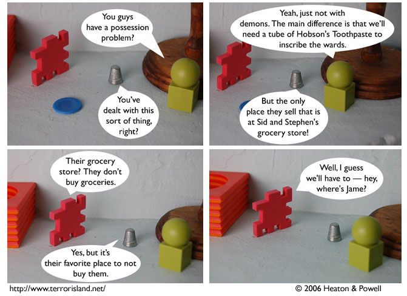

Strip #71
— Friday, November 24, 2006
When it comes to demonic wards, there’s only one choice.
Notes, Thoughts, &c.
Ben’s Notes
We didn’t update on Thanksgiving, so I’m going to wish you all a happy Thanksgiving today instead. Happy Thanksgiving!
This year, I’m thankful for humans. Without them, most of the things I own wouldn’t exist, and I would have significantly fewer friends. It’s easy to take humans for granted, but our lives would definitely be less interesting without them. Thanks, humans!
Lewis’s Notes
Greetings, people of the future. I write this letter to you from what will now be three days in the past. Please give my regards to the Lewis of your era, as time travel will have been hard on him.